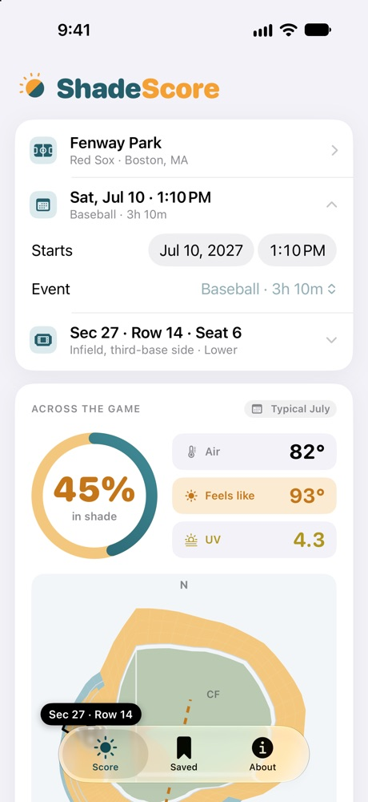
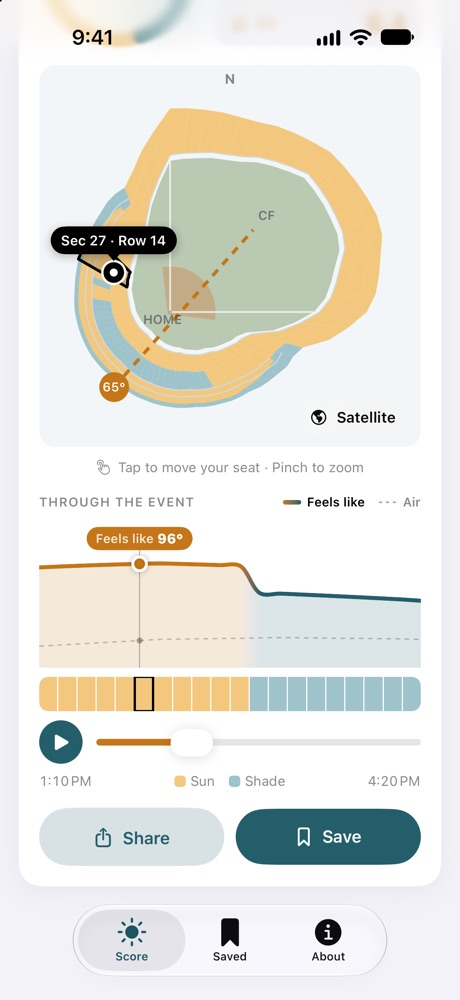

- Pick your gameChoose the stadium, date and start time.
- Add your seatType your section, row and seat, or tap the map. Pinch to zoom in on your section.
- See your scoreHow much of the game you'll be in shade, the air temperature, how hot your seat will feel, and the UV.
- Watch it play outPress play or slide to see the sun move and what your seat feels like, moment by moment.
- See it for realLook at the shade on a satellite view of the stadium, and save your games.